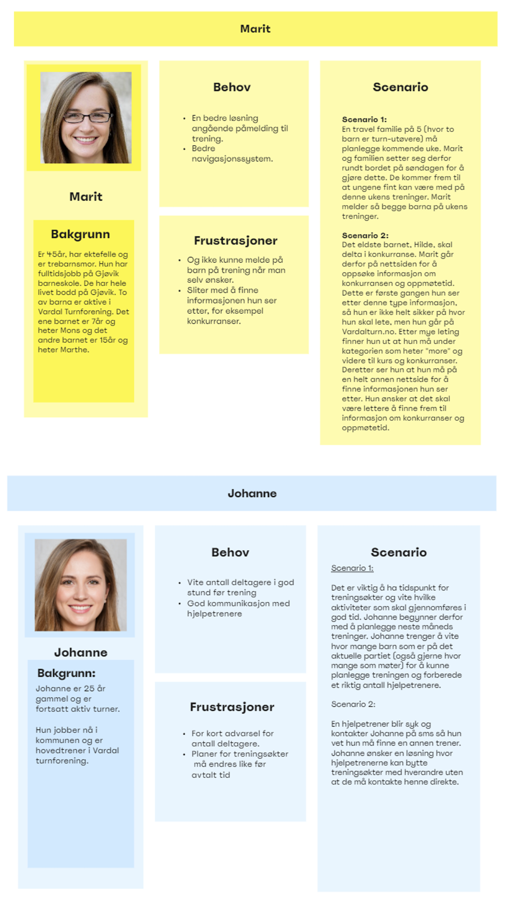
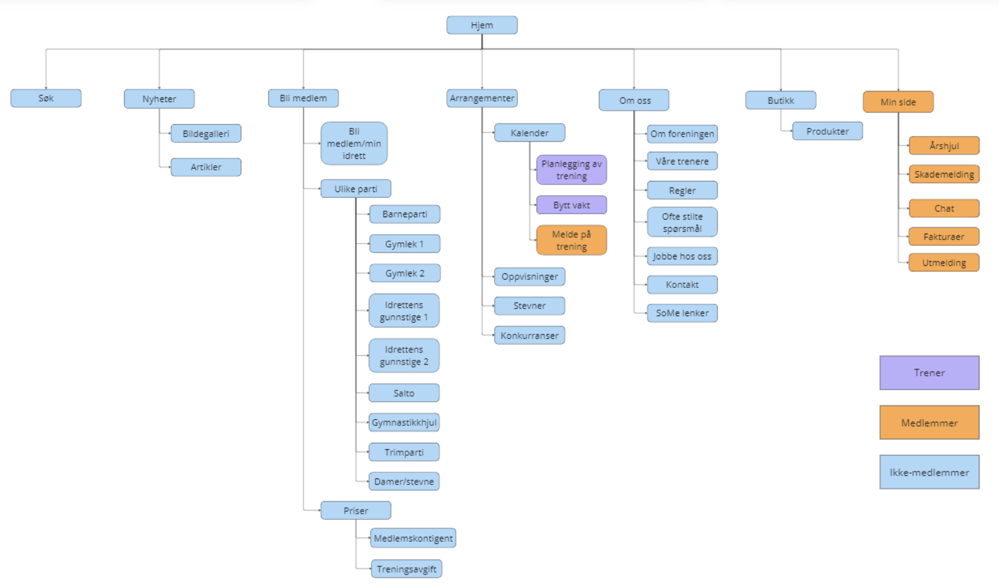
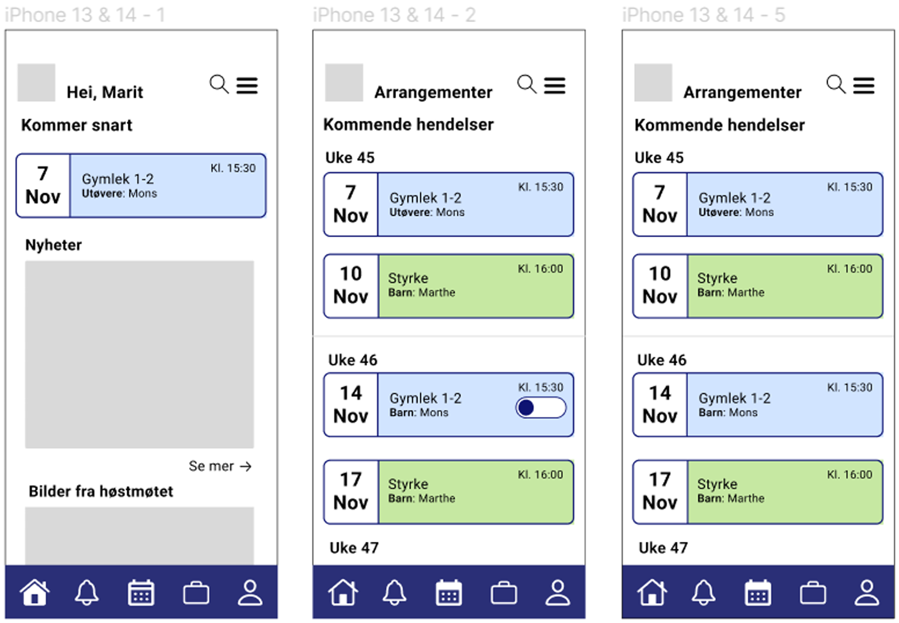
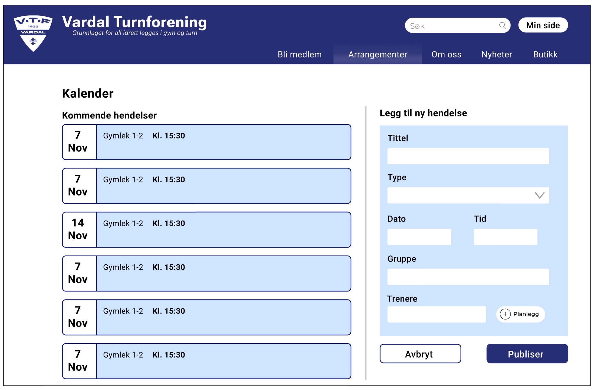
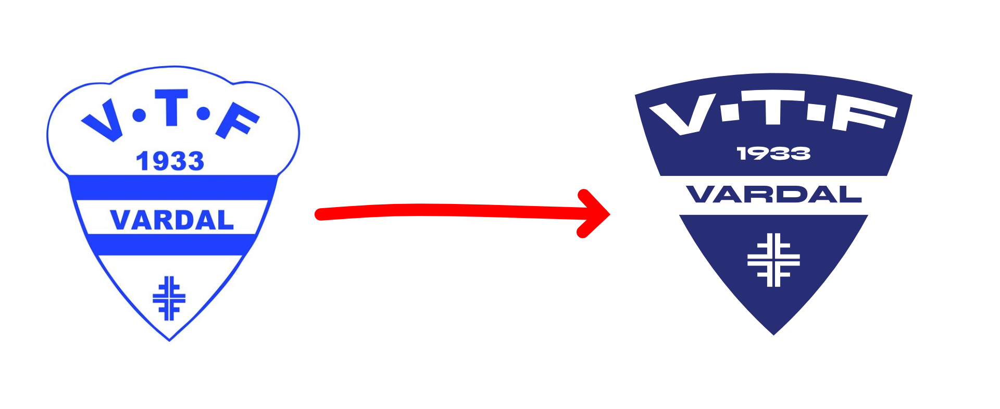
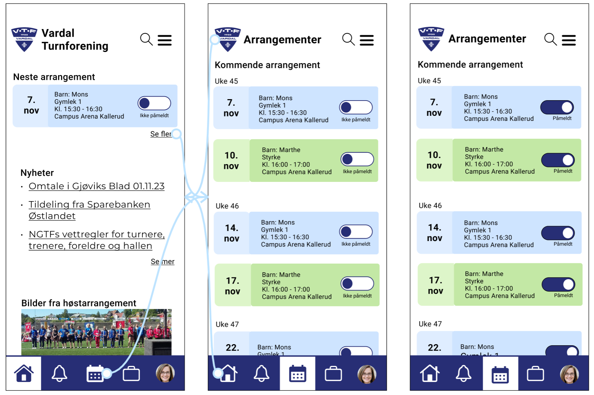
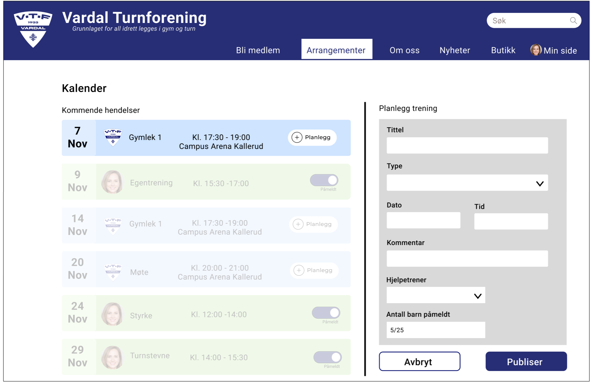

Vardal Turnforening

2023 | Emne: Informasjonsarkitektur | Gruppe prosjekt | Rolle: informasjonsarkitekt, UX-designer, grafisk designer
Vardal Turnforening er en stor turnforening i Gjøvik med utøvere i flere aldresgrupper, men de opplever problemmer med å bruke platformene de har nå. Oppgaven våres var å konseptualisere og designe et forslag til en ny digital løsning som kan gjøre hverdagen bedre for foreldre til potensielle utøvere, foreldre til utøvere, trenere og foreningens styre.
Jeg jobbet sammen med to andre interaksjonsdesignere og en grafisk designer gjennom prosjektet, hvor jeg var med å fokusere på informasjonsarkitektur, brukeropplevelse og grafisk design.
Insiktsfasen
Etter vi hadde fått casen fikk alle gruppene tildelt et intervjuobjekt. Det var enten en forelder til en utøver, en trener i foreningen eller et styremedlem. Vi fikk intervjue et styremedlem og lagde intervju guide til det med flere spørsmål rundt nettsiden til VTF, Spond og andre relevate spørsmål. etterpå delte alle i klassen anonymiserte versjoner av intervjuene sine, så vi kunne få insikt fra andre sine intervjuer.
Hovedinnsikt fra intervjuer:
- Foreldre føler de får for mye urelevant informasjon på spond
- Trenere ønsker en enkel måte å bytte vakter på
- Styret ønsker en oversiktelig nettside for å rekrutere nye medlemmer
Personaer
Ut fra intervjuene lagde vi flere personaer, men det var 2 vi brukte videre i prosjektet: Marit, en mor med 2 barn som er utøvere i VTF og Johanne, en trener i VTF.

Videre brukte vi andre metoder som storyboards, affinity maping, How Might We og Crazy 8 for å sortere data og ideutvikle løsninger.
Konseptuering
Målet for faget var å lage både app og nettside for VTF. Her startet vi med å lage en Sitemap for nettsiden med alle sidene og funksjonene den skulle ha som at trenere kan bytte vakt.

Videre lagde vi en Lofi/midfi app prototype med fokus på at personaen Marit kunne melde på barnene sine hver for seg i appen.
Og en nettside prototype hvor personaen Johanne


Utvikling
Underveis gjennom faget hadde vi jobbet med å utvikle en ny visuel profil for VTF, og vi kom fram til en mer morderne logo jeg designet.

Samtidig brukte lofi protoypene vi hadde designet først til å finne forbedringer til den, slik at vi kunne utvikle en mer brukervennlig prototype.

Fokuset for appen var at Marit skulle kunne melde barnene sine opp separat i appen, og fort vite hvem som er hvem med forskjellige farger til hvert barn.

Fokuset for appen var at Marit skulle kunne melde barnene sine opp separat i appen, og fort vite hvem som er hvem med forskjellige farger til hvert barn.
Du kan prøve hele prototypen av appen og nettsiden i figma med knappene under i tillegg til å se designmanualen:
Til Figma app prototype Til Figma nettside prototypeÅpne designmanual
Refleksjon
Jeg ser i dag at det er mer vi kunne gjort for å gjøre prototypene mer tydelige i hvordan man gjør ting. Spesielt for nettsideprototypen er det vanskelig å vite om Johanne skriver opp en ny trening eller om hun legger til ny informasjon på en trening som alt finnes.
Samtidig ser jeg mest hvordan jeg har vokst og blitt bedre siden 2023. Gjennom prosjektet følte jeg å ha vært aktiv og bidratt med hva jeg kan, spesielt på valg innen visuell stil og prototyping av nettside. Samtidig ser jeg muligheten til å legge ned mer i prosjekter for fremtiden.
Tilbake til alle prosjekter